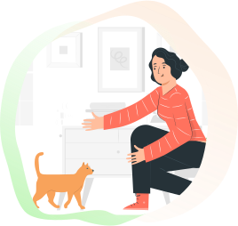
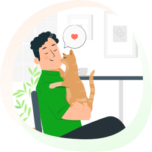
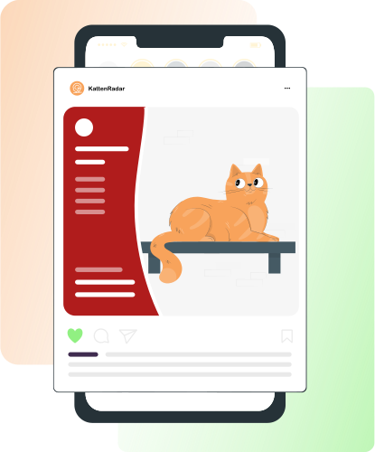

Direct hulp bij het terugvinden van je vermiste kat
Laat een vermist-bericht van je vermiste kat zien aan al jóuw buurtgenoten.


81%
Terecht-percentage
4.9 Stars
150 Reviews on Google, Facebook & Trustpilot

96
Katten Veilig Thuis
3 Stappen om je kat terug te vinden
1
Aanmelden
Vertel waar je kat vermist is, hoe hij of zij heet en kies een foto.

2
Bekijk voorbeeld
Je krijgt een voorbeeld van een digitale zoekactie voor jouw kat.
3
Start zoekactie
De versnelde promotie kan direct je buurtgenoten bereiken.